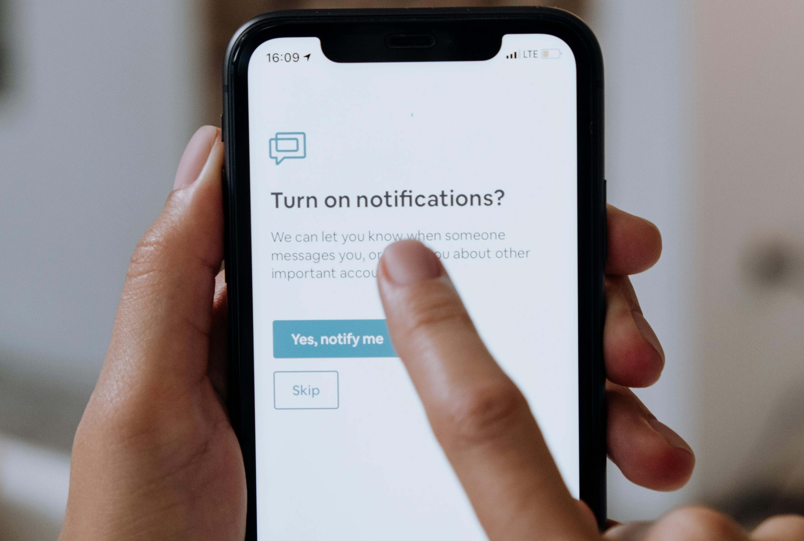

Stay in Control of Your Health
Track symptoms, manage medications, and never miss an appointment,all in one place. Our platform helps you stay organized and take charge of your well-being effortlessly.
Welcome to the Clinic
Knowing and tracking your symptoms, along with managing your medications, can help you take control of your health and well-being. Keeping a detailed record of your symptoms allows you and your healthcare provider to identify patterns and potential triggers, while tracking medications ensures you take the right doses at the right times, reducing the risk of missed or incorrect doses.
Our Services
Log a Symptoms

Medication Reminder
Appointment Tracker